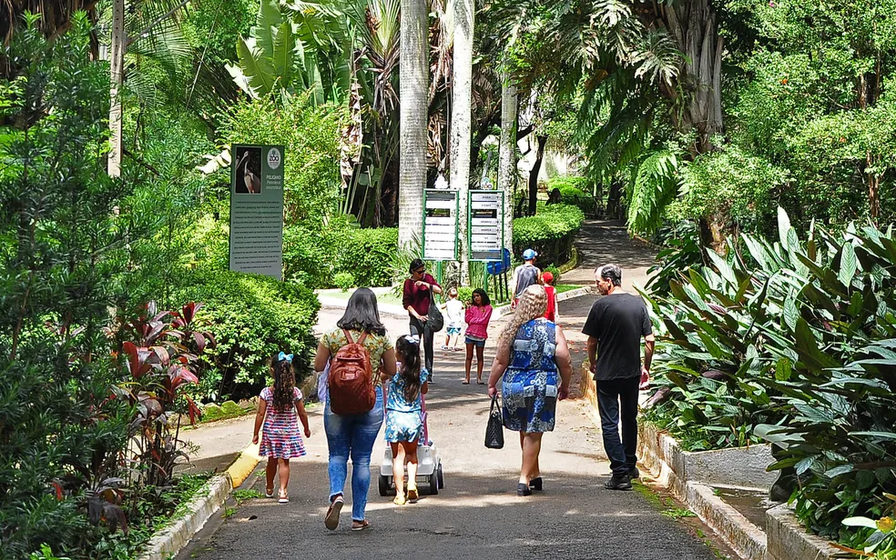
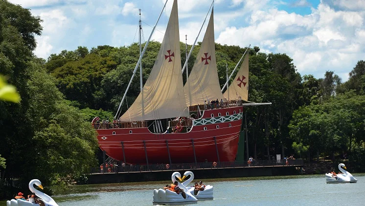
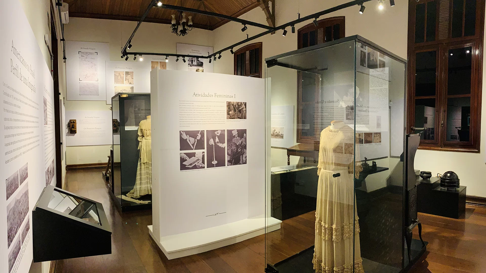
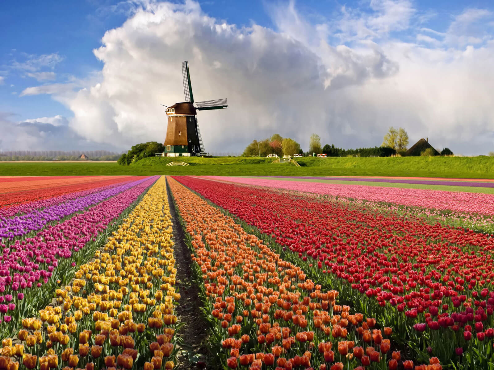
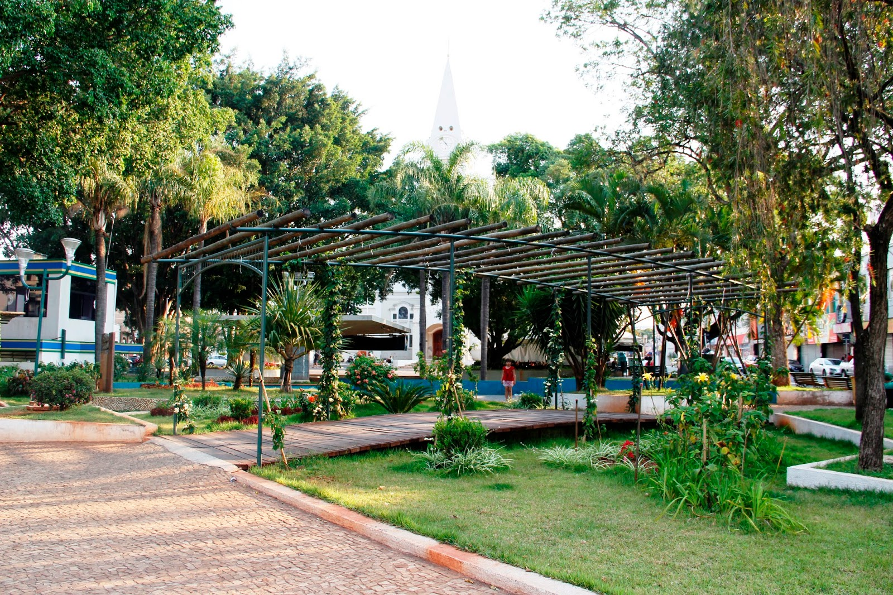
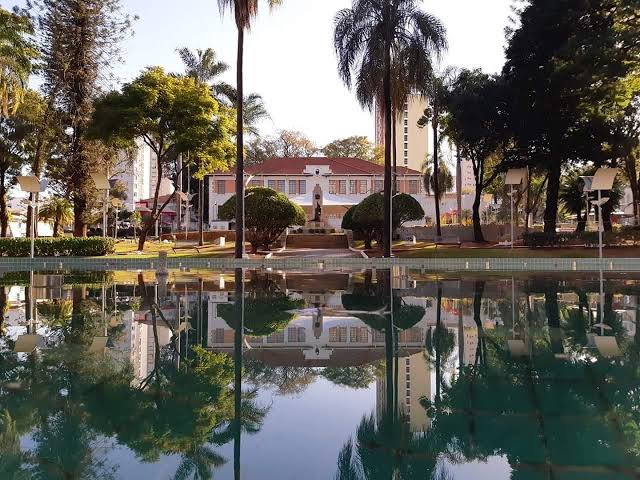
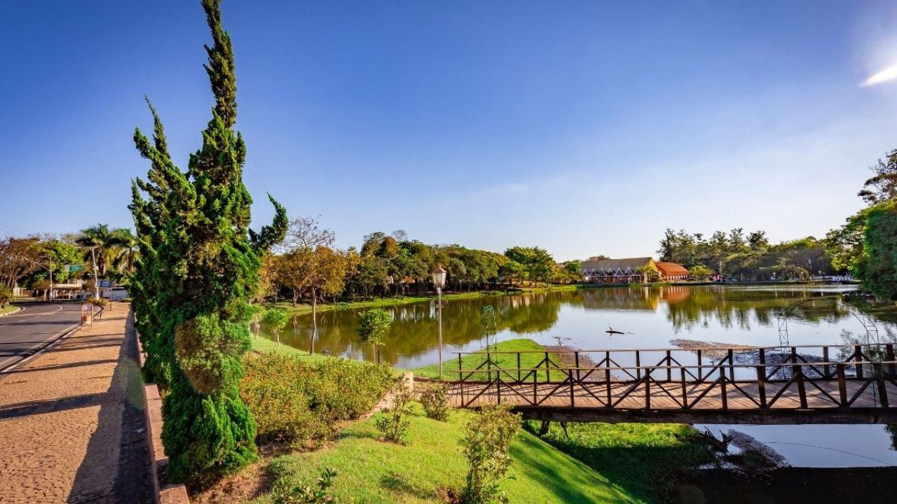

A nossa região por quem vive aqui.
Navegue pelas cidades e descubra os lugares, histórias e costumes que fazem o nosso interior ter um jeito único de viver.

Campinas
A energia da metrópole com o charme do interior. Descubra o equilíbrio perfeito entre inovação, gastronomia e grandes parques.

Americana
Tradição e desenvolvimento que movem a região. Conheça uma cidade acolhedora, forte no comércio e cheia de opções de lazer.

Santa Bárbara d'Oeste
Cultura, história e qualidade de vida. Descubra uma cidade que preserva suas tradições e oferece ótimos espaços de convivência.

Holambra
A Capital Nacional das Flores. Encante-se com a charmosa arquitetura holandesa, gastronomia única e cenários inesquecíveis.

Nova Odessa
O sossego e a natureza do Paraíso Verde. Redescubra a tranquilidade em uma cidade arborizada, acolhedora e cheia de charme.
Pontos turísticos
Planeje o seu
próximo passeio.

Parque Ecológico
Um dos zoológicos mais importantes do estado de São Paulo. É o passeio perfeito para o fim de semana em família, unindo lazer, educação ambiental e muito contato com a natureza.
Conhecer Parque
Lagoa do Taquaral
O coração do lazer em Campinas. O parque oferece uma imensa área verde com pistas de caminhada, pedalinhos, bondinhos históricos, quadras esportivas e muita sombra para relaxar.
Conhecer lagoa
Museu da Imigração
Guardião da história local, o museu preserva as memórias e tradições dos fundadores e colonos da região, com exposições fascinantes e um casarão histórico belíssimo no centro.
Conhecer Museu
Moinho Povos Unidos
Um símbolo de Holambra e de suas raízes holandesas. O moinho reúne espaços de visitação e um mirante para observar a cidade e seus arredores.
Conhecer moinho
Jardim Botânico Plantarum
Em Nova Odessa, o jardim é um espaço para conhecer a flora brasileira, caminhar entre áreas verdes e observar de perto a diversidade de plantas.
Conhecer jardimPraças
O charme das nossas praças.
Conheça os pontos de encontro mais tradicionais da região, cheios de história, lazer e cantinhos perfeitos para relaxar.



Atrações
Aproveite cada cidade.
Natureza, cultura e passeios para aproveitar a nossa região.
Galeria de fotos
A região em imagens.
Um olhar sobre as cidades e os lugares que fazem parte da nossa história.
Mapas
Encontre seu próximo destino.
Selecione uma cidade para explorar sua localização no mapa.